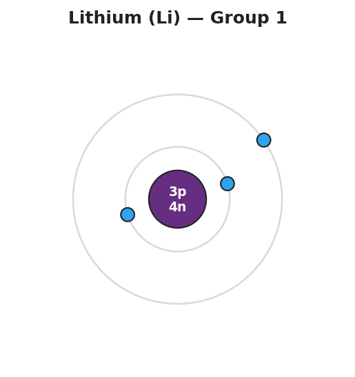
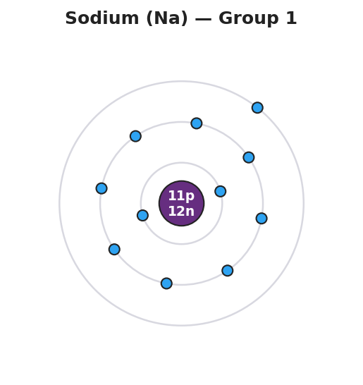
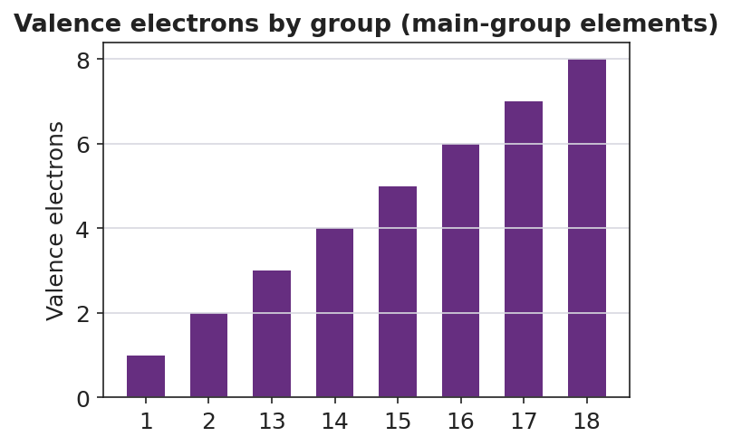

01 Phenomenon
Lithium, sodium, and potassium are three different elements stacked in the same column of the periodic table. When a small piece of each is dropped into water, all three react the same way: lithium fizzes, sodium pops and skitters, potassium ignites with a lilac flame. Same kind of reaction, getting stronger down the column. These three atoms have different numbers of protons and different sizes — yet they behave like a family.
02 Driving question
Why do all the elements in a column of the periodic table behave so similarly?
03 Notice & wonder
Look at the three Bohr-model diagrams your teacher is projecting (lithium, sodium, potassium).
| I notice… | I wonder… |
|---|---|
Turn & Talk #1: The three atoms have different numbers of protons (3, 11, 19) and different numbers of shells (2, 3, 4). Find the one thing that is identical across all three diagrams. In one sentence, name it as specifically as you can.
04 Initial model
Before your teacher names the process: use the Periodic Table (Reference Table S) to look up the electron configuration of oxygen (O) and chlorine (Cl). Write each one exactly as printed, then state how many electrons are in the outermost shell.
| Element | Electron configuration (from Reference Table S) | Electrons in the outermost shell | Group number |
|---|---|---|---|
| Oxygen (O) | |||
| Chlorine (Cl) |
What is the last number of each configuration? __________ (O) __________ (Cl)
Compare the last number to the group number. What relationship do you notice? _______________________________________________
What single piece of information did you need from the formula and the table? _______________________________________________
05 Investigate
Part 1 — ABCs: Draw the shells before you name anything
Use the configurations from Reference Table S. Draw a nucleus and one ring per number, placing that many electrons on each ring. Then circle the outermost ring on each drawing and write the count next to it.
| Element | Configuration | Draw your Bohr diagram here | Outermost electrons |
|---|---|---|---|
| Lithium (Li) | 2-1 | ||
| Sodium (Na) | 2-8-1 | ||
| Potassium (K) | 2-8-8-1 |
What is the last number of all three configurations? _______________
What does that tell you about why Li, Na, and K behave so similarly? _______________________________________________
The figure below shows the same three atoms drawn for you — compare them to your own drawings:


Part 2 — Group-property prediction stations
At each station you get a card showing only an electron configuration — no element name. Read the last number (outermost electrons), predict the group, and predict one property.
| Card configuration | Outermost electrons | Predicted group | Predicted property (reactive metal? unreactive gas? gains or loses electrons?) |
|---|---|---|---|
| 2-8-1 | |||
| 2-8-2 | |||
| 2-8-7 | |||
| 2-8-8 | |||
| 2-4 |
Key question: Two cards have different last numbers but you may have predicted both are reactive (for example 2-8-1 and 2-8-7). Why are they reactive in opposite ways — one loses an electron, one gains one?
Part 3 — Reading the pattern
Look at figures/valence_by_group.png:

How many valence electrons does a Group 2 element have? _______________
Which group has a full outermost shell of 8 valence electrons? _______________
Carbon is in Group 14. Using the chart, how many valence electrons does it have? _______________
06 Make it make sense
For each element below, write its electron configuration from Reference Table S, state the number of valence electrons, and name its group.
Lithium (Li)
- Electron configuration: _______________
- Number of valence electrons: _______________
- Group: _______________
Chlorine (Cl)
- Electron configuration: _______________
- Number of valence electrons: _______________
- Group: _______________
Argon (Ar)
- Electron configuration: _______________
- Number of valence electrons: _______________
- Group: _______________
- Why is argon so unreactive? _______________________________________________
07 Key vocabulary
- electron configuration
- the arrangement of an atom's electrons among its shells, written as a list of counts from the innermost shell outward (e.g., sodium is 2-8-1); printed under each element on the Periodic Table (Reference Table S); the last number is the count of outermost-shell electrons
- valence electrons
- the electrons in an atom's outermost occupied shell; the electrons that participate in chemical reactions; equal to the last number of the electron configuration and, for main-group elements, predictable from the group number
- group
- a vertical column of the periodic table; every element in a group has the same number of valence electrons, which is why elements in the same group share similar chemical properties
Use each term in a sentence about today’s investigation. Do not copy the definition — describe something you actually drew, read, or predicted.
electron configuration: _______________________________________________ _______________________________________________
valence electrons: _______________________________________________ _______________________________________________
group: _______________________________________________ _______________________________________________
08 Revise your model
Return to your three Bohr drawings (Li, Na, K). Add vocabulary labels:
Next to the list of rings on each drawing, write the label “electron configuration.”
Draw a box around the outermost ring on each drawing and label it “valence electrons.”
Write the group number next to all three drawings. They should all be Group ____.
Now write an appositive sentence for chlorine:
Chlorine’s valence electrons — its ___ outermost electrons — make it a very reactive ___ that tends to ___ one electron.
Then finish this Because / But / So sentence:
Lithium, sodium, and potassium all react with water the same way because __________________________________________, but __________________________________________, so __________________________________________.
09 Exit ticket
(a) Use the Periodic Table to write the electron configuration of magnesium (Mg). How many valence electrons does it have, and what group is it in?
Electron configuration: _______________ Valence electrons: _______________ Group: _______________
(b) Use the Periodic Table to write the electron configuration of fluorine (F). How many valence electrons does it have, and what group is it in?
Electron configuration: _______________ Valence electrons: _______________ Group: _______________
(c) In one sentence, explain why all of the Group 17 elements (fluorine, chlorine, bromine…) are highly reactive.
10 Explore further
- Valence electron diagrams (core activity): Using the Periodic Table (Reference Table S), students draw Bohr-model shell diagrams for Li, Na, and K and circle the outermost-shell electrons. They discover, by drawing, that all three end in a single outer electron. Connect to `figures/bohr_lithium.png`, `figures/bohr_sodium.png`, and `figures/bohr_potassium.png`.
- Group-property prediction stations: Set up short stations, each with the electron configuration of an unknown main-group element printed on a card (no name given). At each station, students count the outermost electrons, predict the group, and predict one property (reactive metal? unreactive gas? gains or loses electrons?). They then flip the card to check against the element's identity. A digital alternative: the Javalab "atom builder" or PhET "Build an Atom," where students add electrons shell by shell and watch the outer shell fill.
- Bar-chart reading: Students read `figures/valence_by_group.png` to confirm the pattern: Group 1 → 1 valence electron, Group 2 → 2, Groups 13–18 → 3 through 8.